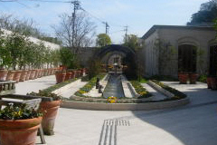

もうすぐ閉店のティファニー美術館の売店
2007/3/10
もうすぐ閉館してしまう、ティファニー美術館の売店に行きました。
館内に閉館理由が書いてあったんですが、その内容よりも文章の書き方の方が気になりました。閉館してしまうのは残念ですが、しかたないですね。
売店の商品は補充をあまりされていない様で、商品が空になっているスペースが多くありました。
今日は閉店まえに、大好きなチョコをもう一度食べたいと思って行ったんですが、商品の種類が結構減ってました。お店の人の話では、来週か再来週くらいで商品が全てなくなるんじゃないかって事でした。
買いそびれたもの、もう一度欲しいもの、記念に買っておきたいものなんてあったら早めに行った方がいいみたいです。

ここのお庭もこれが見納めになるかもしれません。
ティファニー美術館のチョコレート
ティファニー美術館で売っているチョコレートはとっても美味しいです。
「ベルナルド・カラボー」って名前のお店なんですけど、私は今まで食べたチョコの中で一番好きです。チョコレートの味が濃厚なんですけど、甘すぎず、とっても上品です。ビター系のものは特に好きです。
お値段が高いのがちょっと問題なんですが、特別な日には是非食べたいって感じです。
ティファニー美術館の入場券は2000円もするのでなかなか行けませんが、売店の所は入場料はいりません。専用の駐車場（２時間無料）に車を停めて、お気軽に買い物が出来ます。
入り口付近には花が沢山飾ってあるので、こっちを見に行くのも楽しいです。3月は椿が見ごろで、5月下旬6月上旬は薔薇が見ごろです。